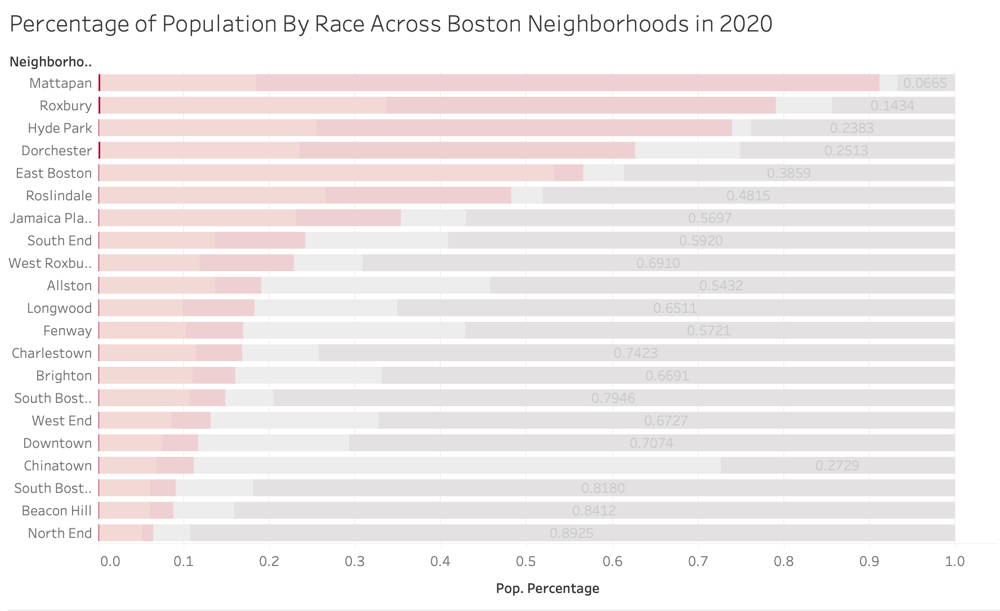

Subtheme: Corporate Landlords & Evictions
Motivation
In lecture, Professor D'Ignazio mentioned the absence of eviction data despite political demands ever since 2016. I believe such absence exactly shows that more investigation and attention are needed for this topic. According to eviction report by Homes for All MA, the COVID-19 pandemic exacerbated eviction filing rates in Massachusetts, a lot of which intentionally targeted towards marginalized populations like Black, Latinx and single mothers. Homes for All MA also highlighted that corporate and abseentee property owners are more likely to file evictions. The dataset that I am analyzing enatils the change in corporate ownership and owner occupancy rates from 2004 - 20204 in Boston neighborhoods, as well as the demographic information of each neighborhood. Although lacking on specific eviction filing data in the Boston area, I hope that through this dataset I can learn about which neighborhoods have higher rates of corporate ownership, and which demographics are most severely impacted as a result. Since there is no eviction data available for this assignment, I am looking for migration patterns of underrepresented communities, which might be results of eviction filings in the area. Lastly, Homes for All MA also mentioned in the report that "Black, Brown, and Indigenous renters are more likely to be evicted than white renters." I am interested in the situation of Asian Americans and Pacific Islanders on this matter, given that this is a very diverse population with varying socioeconomic backgrounds.
Overall Analysis Questions
- How has corporate ownership rate in Boston changed over time?
- Which neighborhoods are most impacted by corporate ownership and who lives there?
- How do corporate ownership trends compare to owner occupancy trends between 2004 and 2024?
- Where do Asian Americans and Pacific Islanders (AAPI) lie in this problem?
Discoveries & Insights
To tackle my first guiding question as well as to gain familiarity with the dataset, I started off with a line chart looking at how corporate ownership rate has changed from 2004 to 2024 in different neighborhoods in Boston.
We can immediately see that the overall trend for corporate ownership across all neighborhoods is an increase. Additionally, there are a couple different interesting things in this chart:
- The five neighborhoods with the highest corporate ownership rates (in reds and oranges) seem to be predominantly white neighborhoods
- The five neighborhoods with the lowerst corporate ownership rates (in greens and blues) seem to predominantly have residents of color
- East Boston and Charleston neighborhoods (in purple) both displays a drastic increase in corporate ownership rate between 2023 and 2024
- South Boston Waterfront neighborhood shows dramatically fluctuates in corporate owernship rate throughout the 20 years.
- We see a steeper increase in corporate ownership starting in 2019 for most neighborhoods.
Let's dive deeper into these findings one by one. First of all, I have to check and verify the demographics of these neighborhoods that stood out.
According to Homes for All MA's report, Black, Hispanic and Indigenous renters face severe discrimination when it comes to housing. This is supported by MAPC's Homes for Profit report, which indicated that investors tend to invest in areas with highest share of Black, Indigenous and People of Color (BIPOC) populations, thereby increasing the housing cost in those areas even more. Since we are most interested in the impact on all BIPOC residents, their portions of the bar are represented in different shades of pink. It is still unclear where Asian Americans and Pacific Islanders lie in this problem, as this wasn't mentioned in either report, so I choose gray for their portion of the bar as they are unrelated to the current question we are investigating.
One interesting observation we can make about this stacked bar graph is how little indigenous people takes up the total population of most neighborhoods.
They are actually on this graph, in case you don't notice them. Let's zoom in on the indigenous populations to see better.
Looking at this graph, my observations from the previous graph are verified- the top five neighborhoods with the highest corporate ownership rates are predominantly white neighborhoods, with the highest distribution of 89.25% and lowest of 54.32%. On the other hand, although only the two neighborhoods with the lowest corporate ownership rates are predominantly BIPOC (90.92% in Mattapan and 73.82% in Hyde Park), all bottom five neighborhoods ranked higher in distribution of BIPOC residents than over 50% of the Boston neighborhoods. We can conclude from these demographics that there might be an inverse relationship between number of BIPOC residents and the corporate ownership rate of a neighborhood. This is rather surprising, as we should be expecting the exact opposite based on Homes for All MA's and MAPC's reports. One possible explanation for this completely reversed correlation is that MAPC analyzed not only corporate but also individual investors, whose footprint is not captured in our dataset.
The demographic information also does not give us any guidance on the trends of corporate ownership in East Boston, Charleston and South Boston Waterfront, nor explains the overall steeper increase in 2019.
Summary
WRITE FINAL SUMMARY HERE.